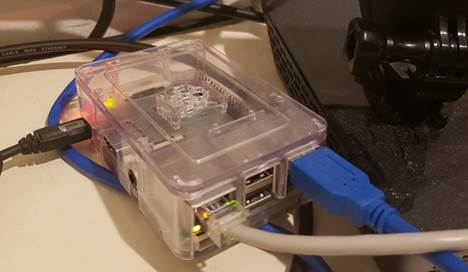

My friend asked me to reccommend a Raspberry Pi for him to buy, so wrote a full review and some reccommendations. (as of Jan 2021)
My Experience
I have the Raspberry Pi 3 B+ (B Plus) with 1.4 GHz 64-bit Quad-Core Processor, 1 GB RAM
I bought it a few years ago as a tinkering kit and it’s still going strong. It serves as my home DNS server, an adblocking/tracking firewall (PiHole), Linux test machine, and it runs web API and SQL calls to Azure every minute (Powershell Core with C# libraries and cron) all simultaneously. It sits on my desk next to my router and behind my monitor as a low power device that doing the complex work of a computer without the power consumption of graphics and screens. To make changes I usually SSH from my Macbook terminal. If you must have a full GUI OS you can fire up VNC and use that the way you would RDP in Windows. As a last resort for troubleshooting, I occasionally use the HDMI. Your usage may be as causal as a game emulator (RetroPie) or as serious as a home computer.

Purchasing the Raspberry Pi
I personally used Canakit and had good experiences with their kits when I was getting started:
https://www.raspberrypi.org/products/
You can even spec out a custom build of their latest model here:
https://www.canakit.com/raspberry-pi-4-8gb.html?cid=usd&src=raspberrypi
I’ve included a few recommendations along with my rationale, but you should certainly check out all the options and make your own choices.
Option 1: Cheapest Conceivable Computer
Pi-Zero
Board Only $5
|
1GHz processor, 512MB ram and barely any ports to speak of. It doesn’t even have onboard network connectivity. It will run stripped down Linux and accomplish the most basic of tasks like being a garage door opener, or the brain for some simple device like a homemade smart alarm clock or homemade surveillance doorbell.
|
Option 2: Cheap Tinkering
Pi3
A+ Basic Kit $38
Pi3
B+ Basic Kit $55
|
|
|
Remember those ridiculously priced Chinese laptops that seemed too good to be true? That is the kind of performance you can expect if you try to use this like an actual computer. It clocks in with 1.4Ghz on a quad core 64bit architecture and somehow puts out 1080p. You’re best off using it for headless tasks (no screen) and as with the previous recommendation, it can be challenging if it’s your first rodeo with Linux or Raspberry Pi.
The A+ model is cheaper, has fewer ports, smaller form factor, and lower power consumption. However, B+ has twice the ram (1GB vs 512MB), an actual ethernet port and power over ethernet capability. My suggested kit (A+) supplies you with heat sinks, power-supply, and an SD card with the OS preloaded. This is enough to start building without buying extras.
Don’t bother with Pi1 and Pi2, there is almost no cost savings to be had and a huge drop in performance.
Option 3: My Beginner Recommendation
Pi4 2-4GB
Custom Kit $67-$87
This is my recommendation for anyone new to the world of raspberry Pi. You will have the latest hardware with a respectable 1.5GHz 64-bit quad-core ARMv8 CPU and 2 or 4GB of RAM. You’ve got USB-C power supply, USB 3 interface, and double HDMI ports. The price is low enough that you won’t feel guilty leaving it on the shelf for a few years if you got bored or stuck like me.
I recommend the case to prevent dust buildup, heat sinks for longevity of the CPU, a power supply (because random ones you might have may not supply enough), the SD-Card so you have an OS to start with, and a micro-HDMI cable since most people don’t have these lying around.
Option 4: Entry Level Easy Mode
Pi4 8GB
Starter Kit $120
|
Here you will find no compromises on performance or features. Getting this kit is the right answer if you decide you need a full 8GB of RAM and a doubled SD size. Everything you need is included along with a guide on how to put it all together. You’ll expend the minimum amount of time and effort to get started. You also get a better power supply, some convenient storage tools, and a cooling fan. Although the fan seems excessive if you don’t plan to overclock the CPU.
|
Option 5: Money Is No Object
Pi
4 8GB EXTREME Kit - Aluminum $150
Pi 4
8GB Desktop Kit with Display $220
|
|
|
OK big spender, you’re diving head first into this hobby. This will likely be in daily use as a second computer or a media hub for your external hard drives. You will get all the perks of the Starter Kit plus:
EITHER
- An aluminum case that uses the entire chassis as a heat sink (no need for fans)
- An extra mini hdmi cable for your second screen
- An on off switch (normally you’d have to issue the command through the OS)
- Top brand, extra resilient, large memory card
OR
- A touch screen, chip case combo that the pi will be embedded into
- An on off switch (normally you’d have to issue the command through the OS)
- A Pi keyboard and mouse
But why stop there? Buy an attachable 12.3MP camera with interchangeable lenses! Get a TV Tuner to pipe in the local stations. Or you know, just go ahead and build a full-on desktop. Money is no object, right?